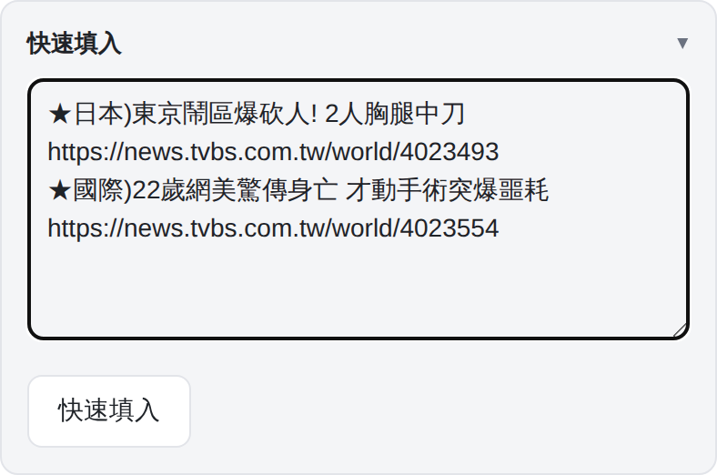
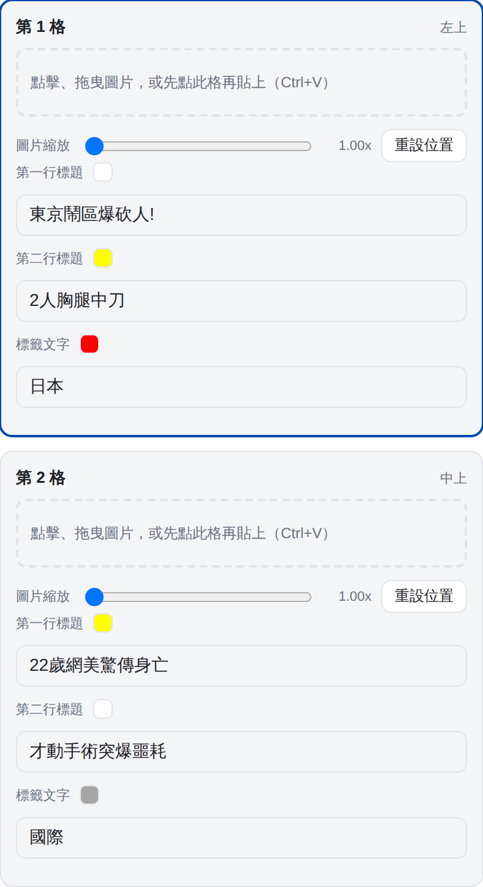
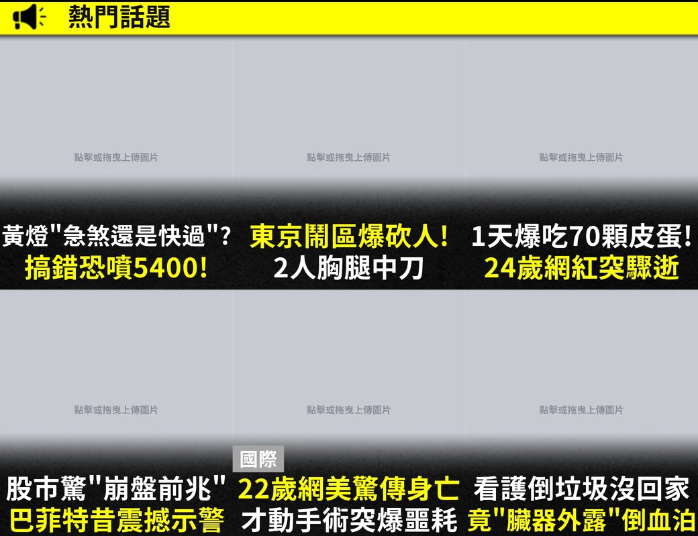

Line推播套版產生器
新聞
娛樂
拼圖
下載本頁
全部下載
直接複製
已確認無錯字、圖片無露白？
再修改
確認下載
版面方式
等分
自由框
直向等分
橫向等分
平均分配
在預覽圖上拖曳格子之間的分隔線，可調整每格比例。
操作對象
調整框
調整照片
畫布高度
貼合內容
＋新增框（接在最下方）
框貼合圖片比例
▲ 上下換位（往上）
▼ 上下換位（往下）
移到最上層
移到最下層
刪除此框
做直式長圖（例如多張橫向數據圖上下疊）：先調畫布高度，再「＋新增框」貼圖，按「框貼合圖片比例」讓框吻合圖片、不裁切，下方的框會跟著往下推；「上下換位」可調整順序。
「調整框」時：在空白處拖曳拉出新框、拖曳框內可移動、拉邊角可改大小，靠近邊緣會自動貼齊；按 Delete 也能刪除選取的框。切到「調整照片」再移動、縮放框內照片。
快速填入
▸
快速填入
頂部標籤
清除本頁
第 1 頁
第 2 頁
T寶貼圖
先在上方預覽圖點選要編輯的格子，再點下方貼圖加入；可在預覽圖上拖曳移動、滑鼠滾輪縮放，點貼圖右上角「✕」移除。
Line推播套版產生器使用說明
✕
操作流程
選版型
：編輯區最上方點「新聞」「娛樂」或「拼圖」。各版型的內容各自保留，切換不會不見。
選頁面
：預覽圖上方點「第 1 頁／第 2 頁」，兩頁各自獨立。
新聞第 1 頁可在「頂部標籤」下方的欄位改黃色標籤列的字，或取消勾選隱藏標籤列。
填標題
：在「快速填入」貼上內容，按「快速填入」一次套進所有格子；也可以手動輸入：編輯區一次只顯示一格（預設第一格），在預覽圖上點哪一格，就換成那一格的編輯區。
★直擊)第一行標題 第二行標題
★ 開頭一則一格；「標籤)」寫在★後面會變成標籤，不寫就沒有標籤；碰到空格（全形、半形）或「!」「?」就自動換到第二行；整段過審推播新聞直接貼入即可，網址行會自動略過。
★ 下一行的文章連結會自動抓第一張圖放進對應格子；之後想換圖，直接拖進新圖或選好格子按 Ctrl+V 即可（手動放的圖，再按一次快速填入也不會被蓋掉）。
放照片
：在預覽圖上
單擊
格子選取、
雙擊
開啟選檔；也可以把圖片拖進格子，或選好格子後按 Ctrl+V 貼上。
在照片上拖曳可移動、滑鼠滾輪可縮放，「重設位置」回到置中。
遮擋人物（選用）
：先選格子，再點預覽圖下方「T寶貼圖」的表情，拖曳移動、滾輪縮放，點右上角「✕」移除。
下載
：按「下載本頁」存目前這頁，或「全部下載」一次存兩頁。
拼圖
等分
：選「直向等分」「橫向等分」（不切～4），在預覽圖上拖曳分隔線可調整每格比例，「平均分配」回到等分。
自由框
：切到「自由框」後選「調整框」，在空白處拖曳拉出新框、拖曳框內移動、拉邊角改大小，靠近邊緣或其他框會自動貼齊；可「移到最上層／最下層」「刪除此框」（或按 Delete）。
直式長圖
（例如數據圖上下疊）：自由框可改「畫布高度」。先「＋新增框」補到需要的框數、各自貼上圖片，再按「框貼合圖片比例」讓框吻合圖片（不裁切，下方的框會跟著往下推），最後按「貼合內容」；「上下換位」可調整順序。
放照片
：（自由框請先切到「調整照片」）單擊選框、雙擊選檔，拖曳移動、滾輪縮放，和其他版型一樣。
輸出
：「下載」存成 1080 寬的 JPG（等分為 1080×1080，自由框高度可調）；「直接複製」後切到新聞或娛樂，點選格子按 Ctrl+V 就會貼成那格的照片。
快速填入示範

1. 貼上內容
→

2. 按「快速填入」自動套入
輸出格式
新聞
娛樂
拼圖
版型
熱門話題六宮格
拍立得四格
等分／自由框
尺寸
1040 × 800
1040 × 1040
1080 × 1080（自由框可調高度）
格式
JPG（高品質）、300dpi
檔名
20260925新聞Line推播圖_第1頁.jpg
20260925娛樂Line推播圖_第1頁.jpg
20260925拼圖.jpg
檔名開頭為下載當天日期（年月日）
快速填入
最多 12 格（每頁 6 格）
最多 8 格（每頁 4 格）
—（一張畫布）

新聞成品
娛樂成品
小提醒
標題太長會自動壓字距、再縮字級，不會超出格子。
全形標點會自動轉成半形。
標籤欄位留空就不顯示；快速填入時標籤是「國際」會自動變灰底。
新聞版每格有兩段標籤：第一段預設在標題上方左側，第二段（「標籤文字 2」）預設在格子右上角。兩段都能在預覽圖上直接拖曳，只能停在漸層／黑帶下方、標題上方，靠近格子邊緣會自動貼齊；「標籤位置還原」可一次放回預設位置。
每行文字與標籤旁的色塊點一下可展開換色。
「清除本頁」只會清空目前這一頁。
!
確定要清除本頁？
這會清空「本頁」所有格子目前的文字、標籤與圖片設定，且無法復原（不會影響另一頁）。
取消
清除本頁